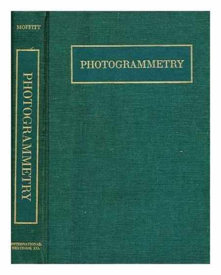
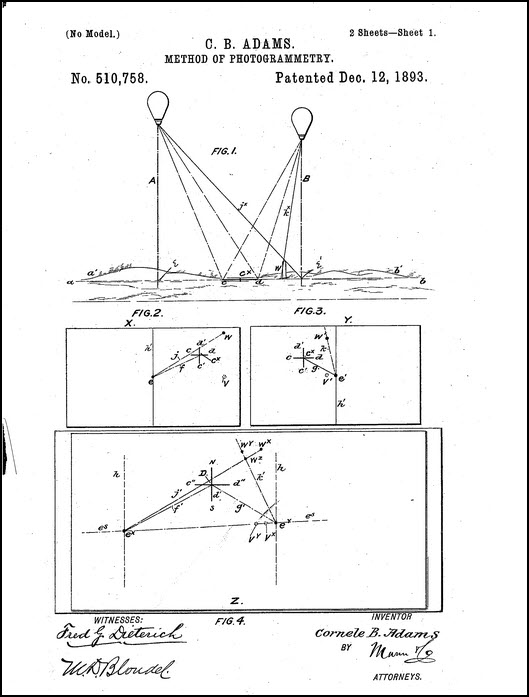
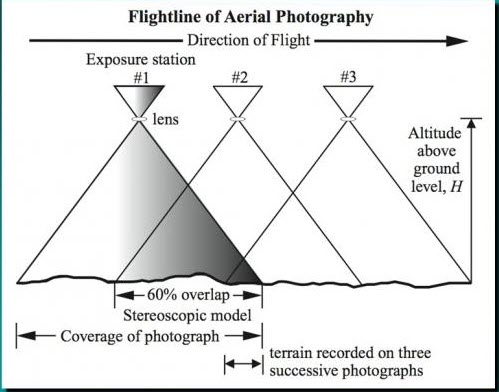
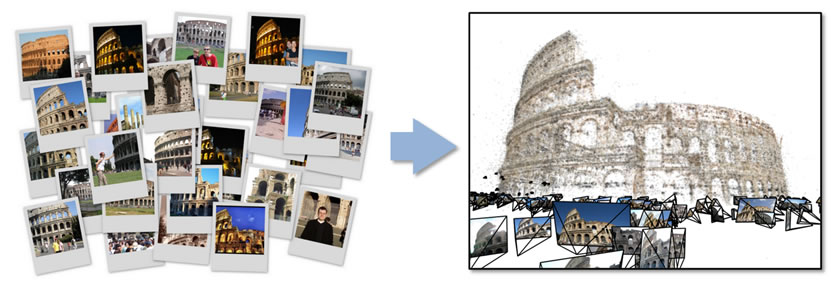
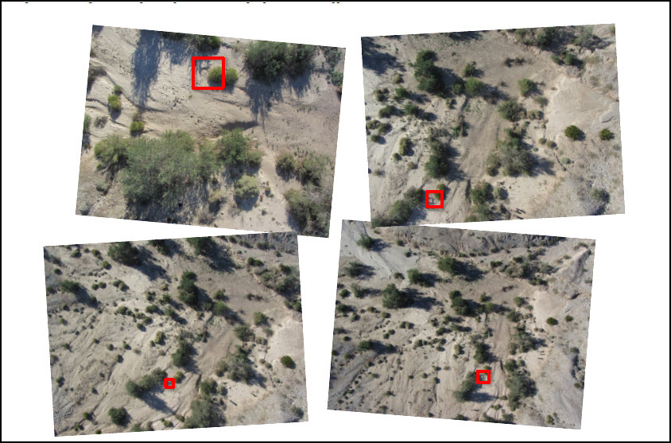
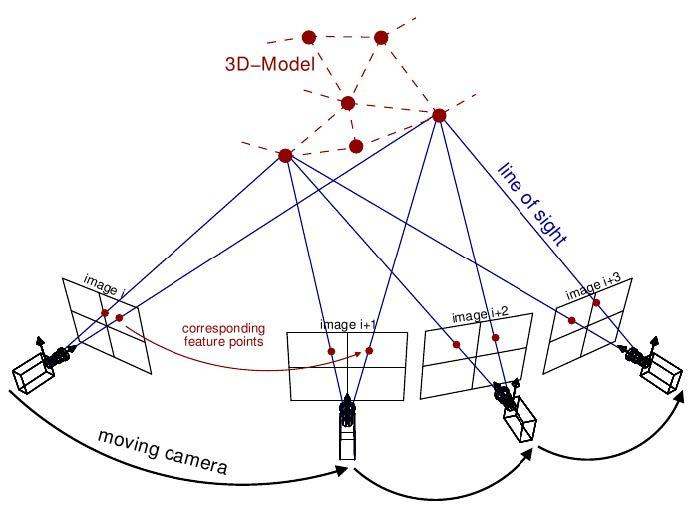
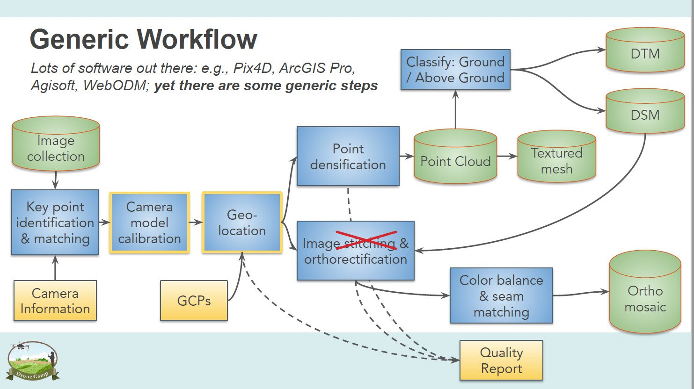

Drone Program
Drone ProgramA little history
Measurement from light
Greek for measurement from light. More practically: measurement from photographs — or in our case, digital images.
Cornele B. Adams patented a two-balloon aerial camera method in 1893. Francis Moffitt's 1959 textbook carried photogrammetry into dentistry, accident reconstruction, and hip replacement.


A little history
What photogrammetry is
“The science and technology of obtaining reliable information about physical objects and the environment through the process of recording, measuring and interpreting photographic images and patterns of electromagnetic radiant imagery and other phenomena.”
— American Society for Photogrammetry and Remote Sensing
Above right: a stereoscope viewing 1990 color-infrared overlapping images of the Connecticut River near Northampton, MA.
Two approaches
Traditional aerial photography
High-quality camera with known intrinsic geometry — focal length, lens, distortion, orientation.
Controlled flying height with high-accuracy position (GPS and IMU).
Photographs captured at nadir.
Ground control.
With all of the control and precision, there are fewer parameters to resolve.

Source: Jensen, 2007
Two approaches
Modern: Structure from Motion (SfM)
Lowe, 1999
Scale-invariant features made automated matching across photographs possible.


Snavely et al., 2006 — and the same idea from a flying camera.
OpenTopography
Two approaches
How Structure from Motion works
Consumer-grade digital cameras.
Less rigor in flying height, lower accuracy position.
Photographs captured mostly at nadir.
Ground Control can improve and measure accuracy.
Many overlapping images generate a massive number of keypoints and tie points — enough to recover camera details and pose.

Source: OpenTopography
From images to products
A generic SfM workflow
Source: Maggi Kelly, 2022 · see also p. 74 in Duffy et al., 2020, Drone Technologies for Conservation, WWF

Drone ProgramPart I wrap-up
Key takeaways
01
Photogrammetry enables measurement from images using precise geometry.
02
Structure from Motion leverages computer vision for flexible 3D modeling.
03
SfM allows use of consumer-grade cameras and less controlled flight paths.
04
SfM workflows rely on massive image overlap and keypoint matching.
05
Ground control improves accuracy but is not strictly required in SfM.
Resources (some)
Where to go next
Duffy et al., 2020 — Drone Technologies for Conservation, WWF Conservation Technology Series 1(5). Read Chapter 7.
Fig. 7.1 — overview of the general SfM process, after Westoby et al. (2012).

OpenTopography's 2021 Structure from Motion workshop — an excellent, practical walkthrough.
Experiment with your own SfM modeling using an app such as Polycam.
TUFTS DRONE PROGRAM · TUFTS UNIVERSITY DATA LAB
Speaker Notes · {{ notesSlideLabel }}
{{ notesText }}